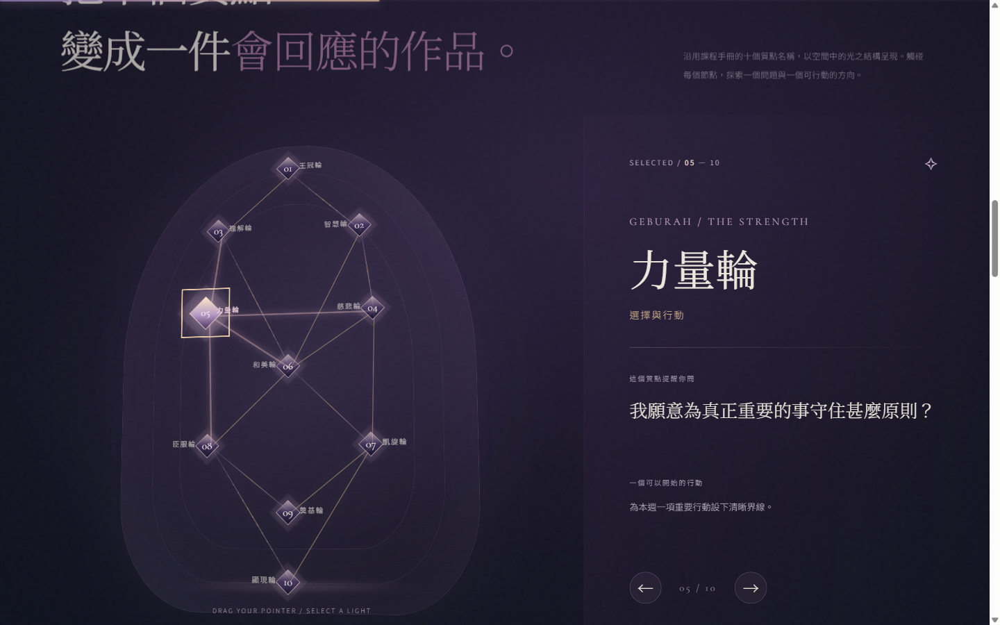
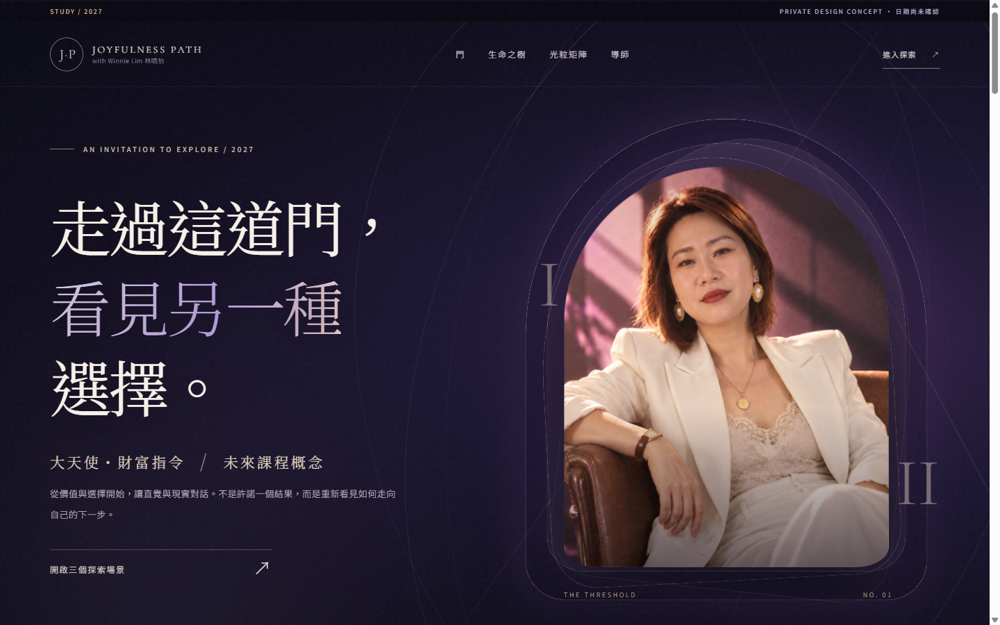
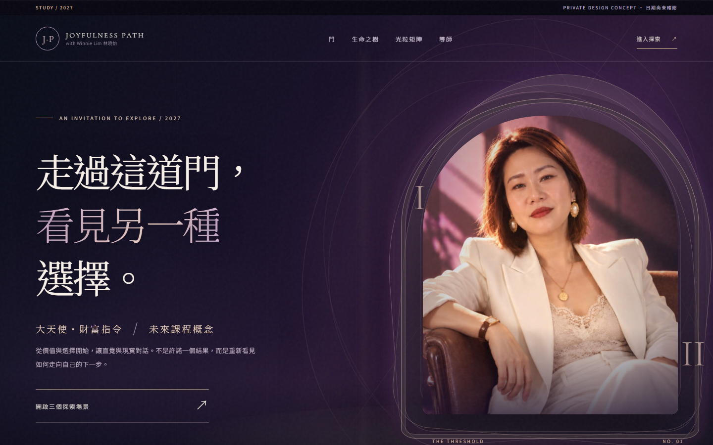
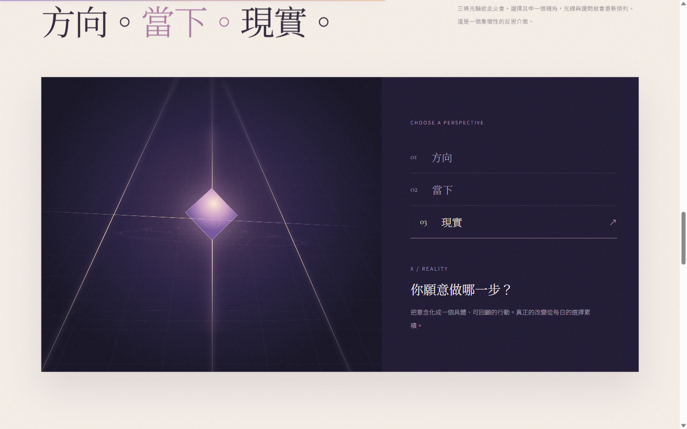
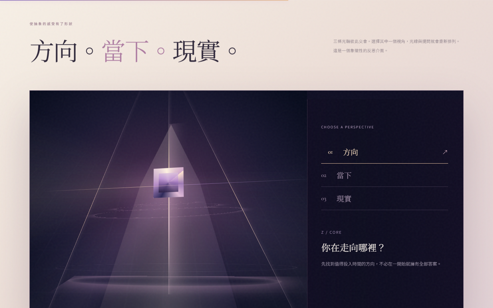
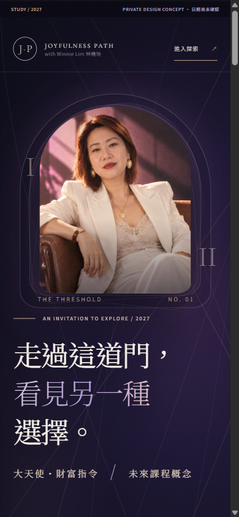

02 / THE SCULPTURE
生命之樹
立體背板、透光晶體、較有物料感嘅邊框與地面投影。十個可操作質點同手冊名稱保留。
BEFORE

AFTER / R2
PRIVATE VISUAL QA / 2026.10.30
沿用同一份 V3 互動網頁、Winnie 真實照片、十個生命之樹質點同三軸矩陣。R2 係本機可操作 HTML／CSS，不是靜態海報。以下左右圖片來自 MSI Chrome headless 真畫面，沒有合成假人物。
直接打開 R2 互動網站 ↗本地候選｜冇修改原 Stitch V3／冇上線／冇改報名付款。圖片用嚟檢視視覺；互動以 R2 真網站為準。
01 / THE ENTRANCE
真實人像放大、拱門加入建築深度同暖金光邊、主標題層級更集中；不再只靠幾圈裝飾線。


02 / THE SCULPTURE
立體背板、透光晶體、較有物料感嘅邊框與地面投影。十個可操作質點同手冊名稱保留。

03 / THE MATRIX
將細粒菱形擴成帶空間透視、舞台燈束及幾何光面嘅裝置；切換方向／當下／現實仍會更新內容。


04 / MOBILE / 390PX
人像變成舞台背景，標題疊入同一個畫面，保留面孔可見性，修正場景字標籤同標題重疊。


本機自測，不等於非作者 QC；原始來源與圖片留 MSI 私有目錄，公開部署保持 HOLD。